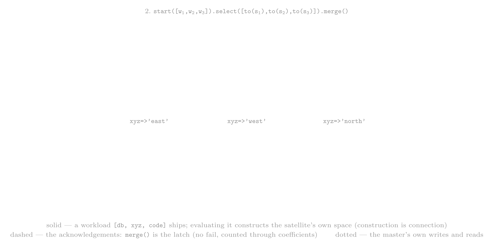

mach-instset
The machine instruction set at /m/mach. A machine is a rec::T of five components — instruction set, compiler, memory, network, processor — three of which are prefixed (a name table resolved by nearest declaration). Machines nest as frames (push, move, pop); work reaches another process by shipping code to a peer.mach-instset-mtron.md
mach instruction set (/m/mach)
A machine is the unit of process: every evaluation runs in one, and / is the root machine. machine::T
(/m/mach/machine, a rec::T) has five optional component slots:
| slot | holds |
|---|---|
instset | the visible vocabulary: types, instructions, rewrites, sugars |
compiler | the map from source to code::T |
memory | the address space: relative bindings and the index of absolute spaces |
network | reach (peers), presence (listeners) and names (prefixes) |
processor | the runtime that executes code::T |
components
Each slot holds a component::T (/m/mach/component), a rec::T. A component is reached by its accessor, by the
machine rec's slot, by ~/<slot> and by <vid>/<slot>; the four views answer one object. push gives each component
its own semantics:
| component | in a pushed child |
|---|---|
memory, instset | a level over the parent's: the parent's later writes read through, the child's stay its own |
network | a level of its own: peers and listeners are not inherited; names inherit by shadowing |
processor | a fresh processor of the parent's architecture, with its own computers and fail stacks |
compiler | a deep clone of the parent's at the push: a later write on either side stays on that side |
Three components are prefixed: each keeps a table of names, and the three tables resolve by one rule, the nearest declaration wins.
| component | a name denotes | example |
|---|---|---|
instset | a scheme alias for a vocabulary root | math:cos → /m/math/inst/cos |
network | an authority | //ginger/a → ws://ginger.local:8555/a |
memory | a path (the redirect table) | cos → /m/inst/cos |
A table is an address (~/network/prefix, ~/memory/redirect); declaring and withdrawing a name are writes to it, so
what the table answers may be written back. A declaration shadows an enclosing one until pop. An address carrying a
host is aligned against the network's names, a scheme-less address against the instset's, and memory's redirects are
consulted by the instset's resolver; the three slots are disjoint, so the order is unobservable.
instset (instruction memory)
mtron> */m/instset?docq
==>docs::[obj=>rec::T[?[
{?}pattern=>uri::T,
{?}const=>[<#{?}>::T],
{?}type=>{?}[<#{*}>::T],
{?}inst=>{?}[inst::T],
{?}rewrite=>{?}[inst::T],
{?}sugar=>{?}[lst::T],
{?}reference=>uri{*}::T,
...(1 more)]][ctor?/m/instset<=(#{*}::T){<j>}]@/m/instset,
dom=>'an extension of space with structu...',
rng=>'creates the instset and registers ...',
args=>[
{?}const=>'constants used across the instset',
{?}type=>'types used to structure objs of th...',
{?}inst=>'instructions associated with the t...',
{?}rewrite=>'code<=code instructions that captu...',
{?}sugar=>'custom instruction syntax sugars g...'],
desc=>'an aggregate of consts, types, ins...']
instset is a frame's visible vocabulary, the union of
- the frame's own
type,inst,rewriteandsugarentries; reference, an ordered list of the vids of the sets it imported, held by reference, never copied;previous, the enclosing machine's instset, read lazily, so an import the parent makes later is visible.
Resolution is own-first; among the references, import order is precedence. An instruction set is a space::T by type
but belongs to a machine by membership only: memory refers an instruction set handed to it into the instset and never
enters it in the address index (Marko, 2026-10-25), and an address under an instruction set is routed to it by the
lookup that weighs the machine's libraries against its data spaces.
the table doors
Each table is read and written at ~/instset/<table>/<name>, \(\mathit{table} \in \{\)rewrite, inst, type,
const\(\}\). A read answers the frame's live, effective table. A write declares a difference in the frame's own
level: an entry replaces this level's entry of the same identity, an inherited entry written back adds nothing, and
noobj clears this level's entries of that name. The entry's own name must match the door's. Identity is the
schema's: an instruction or a rewrite by its tid, a type or a const by its vid.
mtron> *~/instset/type/int.vid()
==>/m/int
A literal instruction is written blocked, addr -> |inst; one an expression computes is written with to(), which
writes the obj flowing in. A rewrite is thereby switched off in one frame:
push(rules)
*~/instset/rewrite/law_absorbing.inactive().to(~/instset/rewrite/law_absorbing)
pop()
a read
A read of the vocabulary walks the whole union — own entries, the references in import order, the enclosing frame —
and collects candidates per identity: an identity a nearer level answered is shadowed, and a new identity is added
alongside, so plus is a family rather than a slot.
A read is a query, and its dom/rng are type constraints. A candidate \(c\) is admitted by a query domain \(d\) iff
\(d \preceq \mathrm{dom}(c)\), where \(\preceq\) is refinement: *plus?nat<=nat answers the int contract, since
\(\mathit{nat} \preceq \mathit{int} \preceq \#\), while *plus answers the family. A query that names a domain ranks the
candidates by distance along the refinement path. A short name is resolved by data memory (plus → /m/inst/plus),
after which instruction memory answers the address.
![one machine, two memories, one read, drawn as two boxes headed by their types, memory::T and instset::T. An instruction set joins the machine twice: the machine::T vertex sends membership (solid) into instset::T and registration (dashed) into memory::T. memory::T does two things, one row each — a value at an address (/usr/marko/age, value, 29) and a route (the name plus, route, the address /m/inst/plus) — and a dotted line carries that same address across the gap into instset::T. There the query ?nat<=nat admits the int contract (drawn solid) while the address's other candidates, real and str, sit dotted inside a group bracket labelled off nat's path, because the query's domain only reaches down nat's path. Beneath both boxes one read runs — mtron's *id, then network, then memory, then instset (on a miss) — with dotted lines tying each hop to the box it asks. The tags under each header give the two lenses: INSTANCES / data and SCHEMA / inst](../assets/mach-instset.png)
compiler
mtron> */m/mach/component/compiler?docq
==>docs::[obj=>component::T[?[
{?}parser=>parser::T,
{?}rewriter=>rewriter::T,
{?}resolver=>resolver::T,
{?}typer=>typer::T]][ctor?compiler<=(#{*}::T){<j>}]@/m/mach/component/compiler,
args=>[
{?}parser=>'the first stage — source text to o...',
{?}typer=>'the fourth stage — the per-machine...',
{?}resolver=>'the third stage — the walk that th...',
{?}rewriter=>'the second stage — the code::T to ...'],
desc=>'the compiler contract of machine::...',
example=>[
'compiler::[rewriter=>fixpoint_rewr...',
'compiler::[parser=>mtron_parser::[...',
'compiler::[=>] [-- the default c...']]
compiler::T composes four optional stages, each a rec entry with a default, each handed the whole output of the last:
\[\mathrm{compile} = \mathrm{type} \circ \mathrm{resolve} \circ \mathrm{rewrite} \circ \mathrm{parse}\]
| stage | key | default | settles |
|---|---|---|---|
| parse | parser | mtron_parser::T | the obj the source denotes, hence the language |
| rewrite | rewriter | fixpoint_rewriter::T | the instruction chain, before any type is known |
| resolve | resolver | scoring_resolver::T | the concrete instruction each call becomes |
| type | typer | typer::T | the type-check points in force |
compiler::[=>] is the default compiler; naming an entry replaces that stage. Only the parser accepts input other than
code; every later stage maps code::T to code::T.
mtron> compiler::[parser=>mtron_parser::[=>]]
mtron> compiler::[rewriter=>fixpoint_rewriter::[max=>3]]
a machine's compiler
Every machine owns its compiler, and both compile-time and run-time resolution use the current machine's resolver. A
stage is replaced through its address. A stage is callable, so it is written blocked, addr -> |stage; unblocked, it
is applied to the address and the write is refused. A compiler write is type-checked by the compiler in force, never
by the stage being installed:
push(literal)
~/compiler/rewriter -> |identity_rewriter::[=>] [-- this frame compiles without rewrites --]
pop()
Not yet: a stage of the wrong kind is refused when written, with one exception. An instruction is admitted into a
structural stage slot (~/compiler/resolver -> |plus(1)), because a call is tested against a structural type by its
coefficient only; the nominal rewriter::T refuses it by name.
parse
parser::T hosts a language: a parser that emits code::T reuses rewriting, resolution, the type system, the
processor and distribution.
compiler::[parser=>a_lang::[=>]] [-- a_lang::T, a registered parser::T subtype --]
The stage is total over objs: an obj that is not a str is lifted as it stands, not re-read. mtron's grammar yields
three shapes:
| source | yields | lifted to |
|---|---|---|
6.plus(1) | code::T | itself |
plus(1) | an inst::T | a one-instruction code, no start |
5 | int::5 | a code that starts with it |
A lone instruction receives no start: it is a fragment relative to its lhs (plus(1) maps 6 to 7, and noobj to
noobj).
rewrite
The rewrite stage precedes resolution, so a rule sees generic dom/rng.
| rewriter | rule |
|---|---|
fixpoint_rewriter::T | apply every rewrite of every instset over the code until the code hash \(h\) satisfies \(h(c_{k+1}) = h(c_k)\) for max consecutive passes (default 2); a rule must be idempotent |
identity_rewriter::T | return the code unchanged |
A rewrite is switched off per frame through its door (the table doors).
mtron> fixpoint_rewriter::[=>]
mtron> fixpoint_rewriter::[max=>3]
resolve
Resolution threads each instruction's range into the next instruction's domain and, per instruction, consults two collaborators:
| collaborator | question | default |
|---|---|---|
selector | which candidates, and in what order | specificity_selector::T |
binder | whether a candidate can be made concrete | generic_binder::T |
Binding gates selection (it runs inside the selector's candidate walk), so the pair are two entries of one stage, and any selector composes with any binder:
mtron> firstfind_resolver::[=>]
mtron> scoring_resolver::[selector=>firstfind_selector::[=>]]
mtron> identity_resolver::[=>]
| strategy | rule |
|---|---|
specificity_selector::T | rank candidates by signature specificity; take the first the binder binds |
firstfind_selector::T | the first viable candidate in read order; selection is order-dependent |
generic_binder::T | bind generics to the lhs, gate on the lhs domain, resolve the arguments |
identity_resolver::T | no walk; return the code unchanged |
The walk also classifies each instruction for the processor — a filter (whose \(\{0,1\}\) coefficient is dropped for compile-time typing only), a gather or barrier, an initial instruction seeding the element type — and rebinds a cast's range to the named type. An instruction that cannot be resolved stays for run-time resolution: the code is semi-resolved, not failed.
type
typer::T holds the frame's check points at ~/compiler/typer/check, one bool::T each: code_resolve, inst_rng,
inst_dom, type_pred, obj_write. The boot default enables every point except code_resolve; a boot profile
overrides points with typer/check => [code_resolve => true]. The state is changed by a nested write and, since each
machine owns its compiler, the change is the frame's own:
mtron> push(lenient)
mtron> @~/compiler/typer/check >>= [inst_dom => false]
==>[inst_dom=>false,
code_resolve=>false,
inst_rng=>false,
type_pred=>true,
obj_write=>true]
mtron> *~/compiler/typer/check
==>[inst_dom=>false,
code_resolve=>false,
inst_rng=>false,
type_pred=>true,
obj_write=>true]
mtron> pop()
The stages query the state through Typer.Helper: the processor before invoking (instDom, instRng), a space before a
write (objWrite), a predicate test (typePred), and the selector before a dynamic resolution (codeResolve).
processor
mtron> */m/mach/component/processor?docq
==>docs::[obj=>component::T[?[
{?}state=>union(stop,run,pause),
{?}result=><#{*}>::T,
{?}tracer=>tracer::T,
{?}analyzer=>analyzer::T]]@/m/mach/component/processor,
args=>[
{?}state=>'the run state: stop, run or pause',
{?}tracer=>"the processor's diagnostics (trace...",
{?}result=>'the objs the last evaluation produ...',
{?}analyzer=>"the processor's statistics (analyz...",
computer=>'the computers this processor minte...',
fail=>"the machine's fail stack: an uncau..."],
desc=>'the processor contract of machine:...']
The processor executes what the compiler produces; the two are siblings, since what a program means and how it runs are separate axes of a machine.
| type | description |
|---|---|
processor::T | the runtime contract: executes a code::T, reports state (stop, run, pause) and result |
swarm_processor::T | the default: independent monads scheduled across the instruction chain, synchronized at barriers; the objs of the halted monads are the result |
computer::T, swarm_computer::T | the computer an evaluation runs in: its code and the state of the run |
tracer::T | the processor's diagnostics, in the typer's form: trace points at ~/processor/tracer/stack (mtron_stack, java_stack), all off by default, overridden by a boot profile's tracer/stack => […]; a pushed machine's processor carries a copy of its parent's |
analyzer::T | any component's statistics, in the same form, at ~/<component>/analyzer: its analysis (an analysis::T of counter::T, gauge::T and timer::T meters, derived as it is read) and its settings, step (the millis a ~/+/analyzer/analysis?subq publication waits) and profile (the processor measures every evaluation's stages and monad flow into it while on, off by default); the network counts its wire at ~/network/analyzer/analysis/wire; a pushed machine's processor measures into new meters under its parent's settings |
Each evaluation runs in a computer the processor mints at ~/processor/computer/<n>. The processor holds the fail
stacks: an evaluation's uncaught fail is filed at ~/processor/computer/<n>/fail/<k>, a fail raised outside any
evaluation at ~/processor/fail/<k>. A fail read from a stack is still uncaught, so it is used as a value through
catch(_). A read with @ keeps each fail's address, so catching it removes it; * returns a detached copy.
threads
mtron> */m/mach/thread?docq
==>docs::[obj=>rec::T[?[
code=><#>::T,
{?}source=>uri::T,
{?}runtime=>real::T@/m/math/time,
{?}yield=>/m/mach/thread::T,
{?}loop=>real::T@/m/math/time,
{?}timeout=>real::T@/m/math/time,
{?}state=>union(stop,run,pause),
...(1 more)]]@/m/mach/thread,
args=>[
{?}result=>'the last result produced by the th...',
{?}state=>'current state of the thread',
{?}timeout=>'how long a read of rhs waits for t...',
{?}loop=>'delay to repeat code evaluation (d...',
{?}time=>'the datetime::T when the thread wa...',
code=>"the thread's executing code",
{?}runtime=>"computes the thread's current runn..."],
desc=>'the thread base type']
| key | value |
|---|---|
code | the code executed |
time | the start time |
runtime | the running time |
loop | the repeat delay; absent, the code runs once |
state | the current state |
result | the last result |
thread::T is the base, and core::T (a platform thread) and virtual::T (a virtual thread) are its strategies, e.g.
core::[code=>…,loop=>second::1.0]@~/sys/thread/…. Evaluation runs on virtual threads by default.
memory (data memory)
mtron> */m/mach/component/memory?docq
==>docs::[obj=>component::T[][ctor?memory<=(#{*}::T){<j>}]@/m/mach/component/memory,
args=>[
space=>'the absolute spaces mounted at thi...',
redirect=>'the redirect table: a short name t...'],
desc=>'the memory contract of machine::T ...']
memory::T is the address space of instances. Its relative bindings are the rec itself, and the index of absolute
spaces is its space entry. A child reads through to its parent's memory. Its name table is the redirect table, which
maps a short name to its home path; the table is per level, and a relative home is not a row.
A read of an address \(a\) answers the first non-empty of \(\mathrm{network}(a)\), \(\mathrm{memory}(a)\) and \(\mathrm{instset}(a)\): the network answers an address carrying an authority a peer declared. Data memory routes names to addresses, and instruction memory answers addresses. A read made while answering an instset read (resolving a pattern's dom/rng types) is a data read, so instruction memory is not re-entered.
network
mtron> */m/mach/component/network?docq
==>docs::[obj=>component::T[?[
{?}pattern=>uri::T,
{?}host=>uri::T,
{?}roster=>[
{?}discover=>rec{*}::T[?[status=>bool::T]]@/m/web/discovery,
{?}machine=>[uri::T=>uri{+}::T]],
{?}peer=>[uri::T[/m/inst/pred?#{?}<=(<#{*}>::T)]@/m/uri/path_encoding=>rec::T[?[
origin=>uri::T[/m/inst/pred?#{?}<=(<#{*}>::T)]@/m/uri/origin,
{?}host=>uri::T,
{?}client=><#>::T]]@/m/mach/peer],
{?}listener=>[uri::T[/m/inst/pred?#{?}<=(<#{*}>::T)]@/m/uri/path_encoding=>rec::T[?[
origin=>uri::T[/m/inst/pred?#{?}<=(<#{*}>::T)]@/m/uri/origin,
{?}route=>[uri::T=><#>::T],
{?}server=><#>::T]]@/m/mach/listener],
{?}supervisor=>rec::T[?[status=>union(supervising,closed)]][ctor?network_supervisor<=(#{*}::T){<j>}]@/m/mach/network_supervisor,
{?}prefix=>{?}[uri::T=>uri::T],
...(2 more)]][ctor?network<=(#{*}::T){<j>}]@/m/mach/component/network,
args=>[
{?}status=>'the health method — an auto inst c...',
{?}listener=>'the sockets this machine serves th...',
{?}pattern=>'the branch this network answers as...',
{?}peer=>"machine's own connections, one per...",
{?}analyzer=>"the network's statistics (analyzer...",
{?}roster=>'known machines, connectionless: <h...'],
desc=>"a machine's network: the endpoints...",
example=>[
'network::[roster=>[b=><ws://192.16...',
'network::[peer=>[<ws/localhost/391...']]
| index | holds | scope |
|---|---|---|
peer | the members this level reaches, keyed by the dial's path encoding | reach: never inherited |
listener | the sockets this level serves on: origin, server, route table | presence: a socket is shared with descendants |
prefix | the names a peer is called by | denotation: inherited by shadowing |
The roster — what the system knows — is one listing at the root, shared by every frame. A pop retracts its level's
reach and presence and restores a shadowed name.
reach
A peer is keyed by its dial address written as a path — the scheme, each host label, the port and the route as
segments, no query: ws://localhost:8555/mtron ↦ ws/localhost/8555/mtron, ws://peer.local:8555/mtron ↦
ws/peer/local/8555/mtron. Two routes of one service are two members, and 127.0.0.1 keys as localhost.
| type | predicate | holds |
|---|---|---|
origin::T | scheme and host; no path, no query | the service a peer reaches |
path_encoding::T | scheme, host labels, port and route as path segments; no authority | the peer and listener keys |
authority::T | host and optional port; no scheme, no path | a name for a service |
peer::T field | value |
|---|---|
origin | the service, scheme://host:port; required |
host | the dial, route included |
client | the protocol client the dial constructed, released by drop |
An origin alone is known but not reachable from here (a peer reference after crossing a wire); with a client it is reachable. Status is derived on read, never stored.
index and drop
index(m) enters a thing into the jurisdiction, and drop(address) maps an address to noobj. No other operation
writes the network's indexes. index dispatches on the handle's nominal type:
| handle | effect |
|---|---|
a protocol client (ws_client::T, http_client::T, id_client::T) | reads the claim from the client, mints a peer::T at the claim's path encoding, supervises a link |
a listener::T | mounts the socket: refuses a route another level serves, shares the server, writes this level's entry |
drop address | retracted |
|---|---|
a peer key (ws/localhost/8555/mtron) | the member; its client is released |
a wire uri with a route (ws://host:8555/mtron) | that surface |
a bare origin (ws://host:8555) | every surface of the service; reach only |
a socket key (ws/localhost/8555) | this level's listener entry, and the server when this level owns it |
unlisten(origin) is drop(origin.pathEncoding()). One retraction answers the member, several a bag, none noobj.
Dialing a surface already held closes the old connection, and the new one takes its key.
mtron> </network/peer/ws/localhost/8555/mtron> -> noobj [-- hang up one member --]
mtron> </network/peer/#> -> noobj [-- hang up every member --]
presence
A machine's authorities — what mDNS announces and a roster files — are its listening surfaces (ws_server::T,
http_server::T). A backend the machine dials (tblespace, mqttspace, grphspace, vecspace) is reach, not
identity: its host and credentials never leave the machine, and an address carrying userinfo is refused.
listener::T field | value |
|---|---|
origin | the socket's service uri |
route | this level's route table, <path> => target; absent when empty |
server | the protocol server holding the socket |
listener::[origin=><ws://0.0.0.0:8555>,route=>[/mtron=>mtron_ws,/mcp=>mcp_mtron]]
A socket has one entry per level. The level that opens it owns it, and its descendants share it with route tables of their own. A route a nearer level serves is refused to a later level, and dropping a non-owner's key withdraws only that level's rows.
the client is the connection
There is no connect instruction: constructing a protocol client is the dial, and the client indexes itself into the
network as memspace::[pattern=>xyz/#] indexes into memory.
mtron> ws_client::[pattern=><ws://localhost:8555/mtron>]
==>ws_client::[pattern=>ws://localhost:8555/mtron,
host=>ws://localhost:8555/mtron,
send=>λ(){<j>},
send_recv=>λ(){<j>},
inst=>[
/m/inst/eval=>eval?A{*}<=code(uri::T){<j>},
/m/inst/from=>*uri::T,
/m/inst/to=>to?A{*}<=A{?}(uri::T){<j>}],
status=>!λstatus?bool<=(){<j>},
close=>λ(){<j>},
...(1 more)]
A client's inst is a mini-instset of overrides with the native signatures: from(<uri>) reads, obj.to(<uri>) writes
its lhs, and eval(code) ships a program for the far side to run. A ws_client declares all three; an http_client
declares from (GET) and to (POST, which stores and evaluates nothing). A shard target serves to and eval.
send_recv is a ws_client's raw wire instruction: 1.plus(2).send_recv(|plus(45)) evaluates plus(45) remotely
against the shipped monad. Instructions are total, \(P(\mathrm{Obj}) \to P(\mathrm{Obj})\): a reach answers a smaller set
rather than an error, and \(\emptyset\) (noobj) is a legal answer.
id_client::T (/m/mach/id_client, scheme loop:) is the identity of the client family: its eval, from and to
evaluate against the local machine, so a read through a loop peer equals the local read.
status
Every client and server answers status, a bool derived on each read: a ws_client while its socket is open, an
http_client while its host answers HEAD, a loop client always, an mcp_client by its health check, an mcp_server
while its dispatch answers a ping, a server while its socket is bound. *~/network/status reports a dialed peer up or
down, and a peer without a client or a roster address never dialed known. A read never dials.
supervision
mtron> */m/mach/network_supervisor?docq
==>docs::[obj=>rec::T[?[status=>union(supervising,closed)]][ctor?network_supervisor<=(#{*}::T){<j>}]@/m/mach/network_supervisor,
args=>[status=>'supervising / closed — the livenes...'],
desc=>'the per-level reconciler that keep...',
example=>['network_supervisor::[=>] [-- start...']]
The network supervises each peer whose client holds a live connection (a link: ws_client):
| event | response |
|---|---|
| the far side goes away | the peer stays listed, offline, and is redialed in place, backoff \(0.5\,\mathrm{s} \cdot 2^k \le 10\,\mathrm{s}\) |
| a request needs an offline peer | the request redials on demand within its \(5\,\mathrm{s}\) open wait |
the owner hangs up (drop, the client deleted, a pop) | the peer leaves the map and is not redialed |
A dial made before the far side is up is an offline peer. Deleting the address that holds a client is the hang-up:
/usr/peer/local -> ws_client::[pattern=><ws://localhost:8555/mtron>] [-- dial, index, supervise --]
/usr/peer/local -> noobj [-- hang up --]
While a peer is offline, *~/network/status reports it down without a round trip, a round trip in flight fails at
once, and law_shard plans over the peers that answer.
prefix
roster is what the system knows, peer what this level dialed, listener what it serves on, and prefix what a peer
is called.
/network/prefix -> [//ginger => <ws://ginger.local:8555>]; [-- bind, spelled as called --]
</network/prefix/ginger> -> <ws://ginger.local:8555>; [-- the same row, by its label --]
//ginger/mtron [-- = ws://ginger.local:8555/mtron --]
/network/prefix -> noobj [-- unbind every name at this level --]
A name is spelled //name and stored name: the door reads and writes the spelling, and the table keeps the label,
which is the key resolution queries. A key that is not a single dot-free label is refused. A row is addressed by its
label (</network/prefix/ginger>), since // is not a path segment. The spelling is the slot //name/…, with no port
and no scheme: an explicit port is literal, a scheme is never rewritten, and a dotted host is a hostname. The tail is
kept, //ginger/a/b/c ↦ ws://ginger.local:8555/a/b/c, so move(<//ginger/a>) ships to the resolved origin. Binding a
name and dialing a peer are separate acts:
</network/prefix/ginger> -> <ws://ginger.local:8555>;
ws_client::[pattern=><ws://ginger.local:8555/mtron>];
frames — push, move, pop
Three instructions choose where code runs. They share one address dialect — ~ the current frame, a (or ~/a) its
child, .. its parent, ../b a sibling — and differ in what they do with the address:
| instruction | effect |
|---|---|
push(t) | mints the machine at t and makes it current; only the leaf is new: \(\mathrm{push}(t) = \mathrm{move}(\mathrm{parent}(t)) \cdot \mathrm{push}(\mathrm{name}(t))\) |
move(t) | walks to the machine at t and closes nothing; move() is move(<..>) |
pop() | discards the current machine — its components and its address — and lands on .. |
A frame is an address. A >> without * walks the uri graph (what is written under an address), and *…>> walks the
obj graph.
mtron> push(xyz)
mtron> *~.vid()
==>/xyz
mtron> /.>>
==>/xyz/
mtron> /xyz.>>
==>/xyz/sys
mtron> pop()
mtron> *~.vid()
==></.>
A pushed frame is its own scope (components): what it writes, imports and dials, and the fails its evaluations file,
are its own, and a pop retracts them, the frame's address included. A frame holds no peers until it dials one. A frame lives in this process:
push(<ws://localhost:8555/worker>) is refused, and code reaches another process by being shipped there.
Not yet: the three instructions answer the whole machine, which over a wire is a large reply rather than a reference.
distribution
Distribution ships code over a client (ws, http, mcp) and returns values. law_shard
(the category graph) emits $\mathrm{branch}(p_i \Rightarrow \mathrm{start}(\mathit{part}_i)
\cdot \mathit{program}, \ldots) \cdot \mathit{combiner}$; each lane runs on its own virtual thread, so the latency is
\(\max_i \mathrm{RTT}_i\) rather than \(\sum_i \mathrm{RTT}_i\). The layouts are catalogued in
distributed computing.
workloads
A peer receives its configuration and its code in one message, since a binding made by one evaluation lives on that thread's stack and is gone by the next. A workload is a rec of configuration and code, evaluated in a closure that binds it:
mtron> [db=>{4,5,6},code=>|(*workload/db.plus(2))](workload=>_){ !*workload/code.apply() }
==>6
==>7
==>8
(workload=>_) binds the rec on the evaluating frame's stack, and |(…) keeps the code inert until
!*workload/code.apply() runs it in that scope. A uri template reads the workload when the read runs, so one code
serves every peer:
mtron> /usr/walk/mama/1 -> [trail=>'ridge',km=>12]
==>[trail=>'ridge',km=>12]
mtron> /usr/walk/mama/2 -> [trail=>'lake',km=>5]
==>[trail=>'lake',km=>5]
mtron> /usr/walk/puppy/1 -> [trail=>'ridge',km=>9]
==>[trail=>'ridge',km=>9]
mtron> [dog=>'mama',code=>|(*</usr/walk/${*workload/dog}/+/km>.sum().to(</usr/walk/total/${*workload/dog}>))](workload=>_){ !*workload/code.apply() }
==>17
mtron> [dog=>'puppy',code=>|(*</usr/walk/${*workload/dog}/+/km>.sum().to(</usr/walk/total/${*workload/dog}>))](workload=>_){ !*workload/code.apply() }
==>9
mtron> */usr/walk/total/+
==>17
==>9
mtron> */usr/walk/total/+.sum()
==>26
The configuration may carry a space. Constructing a space connects it, so a workload whose db is a tblespace::T
connects the receiving peer to the same backend:
[db =>tblespace::[pattern=></usr/data/#>,
host=><mariadb://…>,
driver=><org.mariadb.jdbc.Driver>,
route=>[</usr/data>=><>]]@/sys/space/data,
xyz =>'east',
code =>|(*</usr/data/${*workload/xyz}/+/amount>.sum().to(</usr/data/result/${*workload/xyz}/total>))](workload=>_){ !*workload/code.apply() }
The receiver compiles the code before the template is filled, so a database push-down (SUM in SQL) cannot fire on a
templated address; the peer reads the rows and sums them in mtron.
The multiserver fixture (one MariaDB, three satellites forked from one process) ships its workloads with a
hand-written start([w_1,w_2,w_3]).select([to(s_1),to(s_2),to(s_3)]).merge(), a legal program though not the compiled
form, which is a branch. The master creates every table before any satellite
exists, a satellite imports /m/db/tble and runs no DDL, and the master reads the results from the backend; only
acknowledgements travel home.

'east', 'west', 'north' — and exchanges with the MariaDB below it (pull xyz/+, push result/xyz). A dotted arc from the master to MariaDB marks the master's own steps: 1. creates every table, 3. reads result/+. The legend: solid — a workload [db, xyz, code] ships, and evaluating it constructs the satellite's own space (construction is connection); dashed — the acknowledgements, merge() is the latch (no fail, counted through coefficients); dotted — the master's own writes and reads" width="100%" style="margin:0.3em 0 0 0"/>the gather
The gather completes when every lane, or every route of a merge(), has replied. Equal replies bulk: three replies of 34 arrive as one obj
with coefficient 3, \(34\{3\}\), so replies are counted through coefficients:
mtron> {34,34,34}
==>{3}34
mtron> {34,34,34}.count()
==>3
A fail in the gather is a failed run, and count() counts a fail like any obj, so the gather is checked for fails
before it is counted. A peer that catches its own failure answers the recovery:
mtron> 1.plus(a).catch(34)
==>34
Not yet: an uncaught failure does not arrive as itself; the master waits out its \(2\,\mathrm{s}\) future and holds a
timeout fail (future get timed out after 2000 ms) in that peer's place.
*~/network/host answers the host the current machine runs on; peers forked on one host are told apart by their
service authority.
mtron> *~/network/host
==>booger
appendix — registered types
| under | types (::T) |
|---|---|
/m/mach/component | compiler, parser, mtron_parser, rewriter, fixpoint_rewriter, identity_rewriter, resolver, scoring_resolver, firstfind_resolver, identity_resolver, selector, specificity_selector, firstfind_selector, binder, generic_binder, typer, memory, network, network/discovery, processor, processor/swarm_processor, processor/computer, processor/computer/swarm_computer, processor/tracer, analyzer |
/m/mach | machine, component, thread, thread/core, thread/virtual, thread_executor, peer, listener, id_client, network_supervisor, monad, plan (a rewrite rule as a value), factory, analysis, analysis/counter, analysis/gauge, analysis/timer |
/m/uri | origin, path_encoding, authority |
instset::T is /m/instset, declared by the m instruction set.
appendix — another language
A language is a parser that emits code::T:
- register a
parser::Tsubtype with a constructor; - emit mtron code — a value, an instruction or a
code::T, each of which lifts into a program; - lift a non-
strobj unchanged, so the compiler accepts what is already parsed; - wire it,
compiler::[parser=>my_lang::[=>]], or place it in a machine'scompilerslot.
Rewriting, resolution, the type system, the processor and distribution are inherited. The smallest instance is a
two-word syntax (add 6 to 1) whose parser emits 6.plus(1).
see also
- mtron language reference — the surface the default parser reads.
- mtron type system — vid and tid, predicates, nominal and structural types.
- the category graph — the declared rewrites the rewrite stage consumes, and
?decq. - distributed computing — the shard layouts.
- machine architecture (Java) — classes and invariants.
- figure sources —
assets/tikz/mach-*.tex(TikZ; the PNGs sit beside them inassets/).